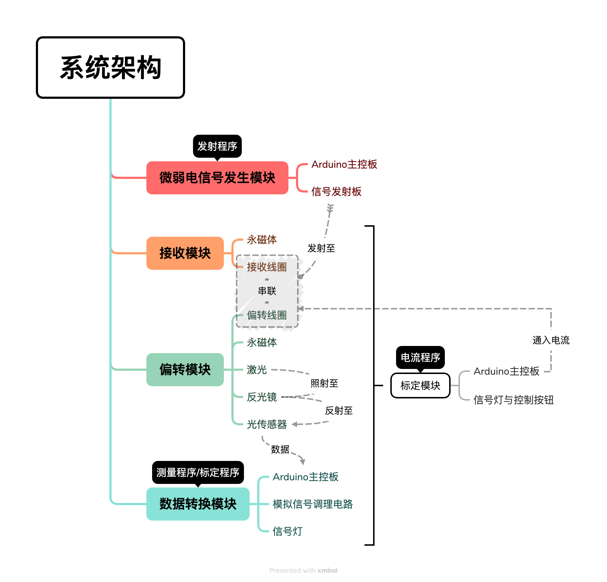
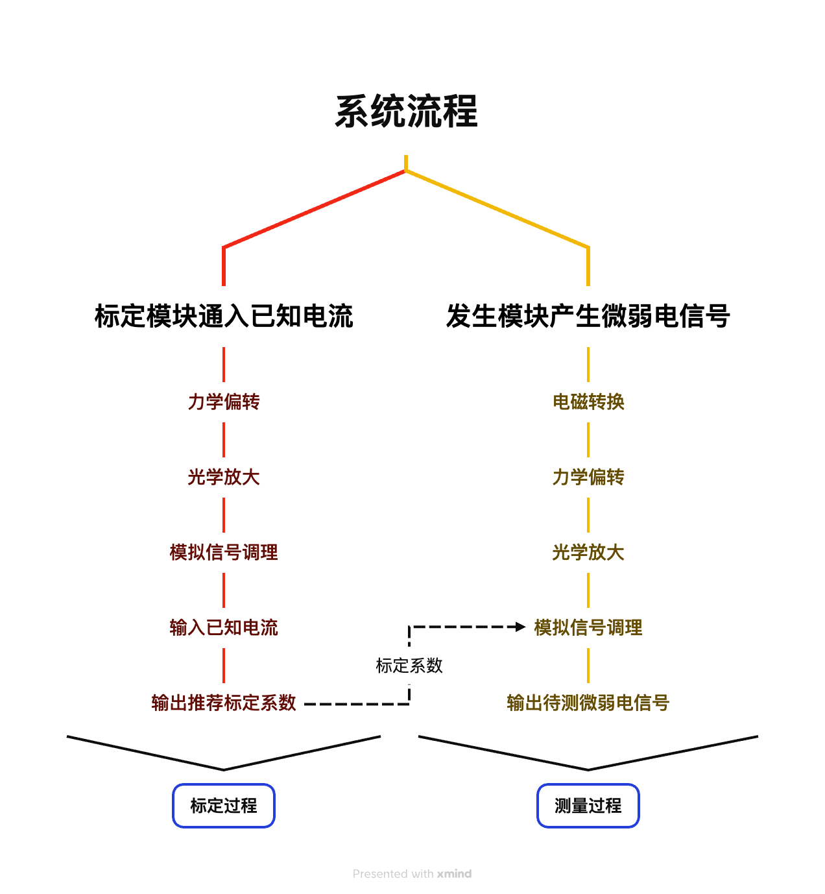
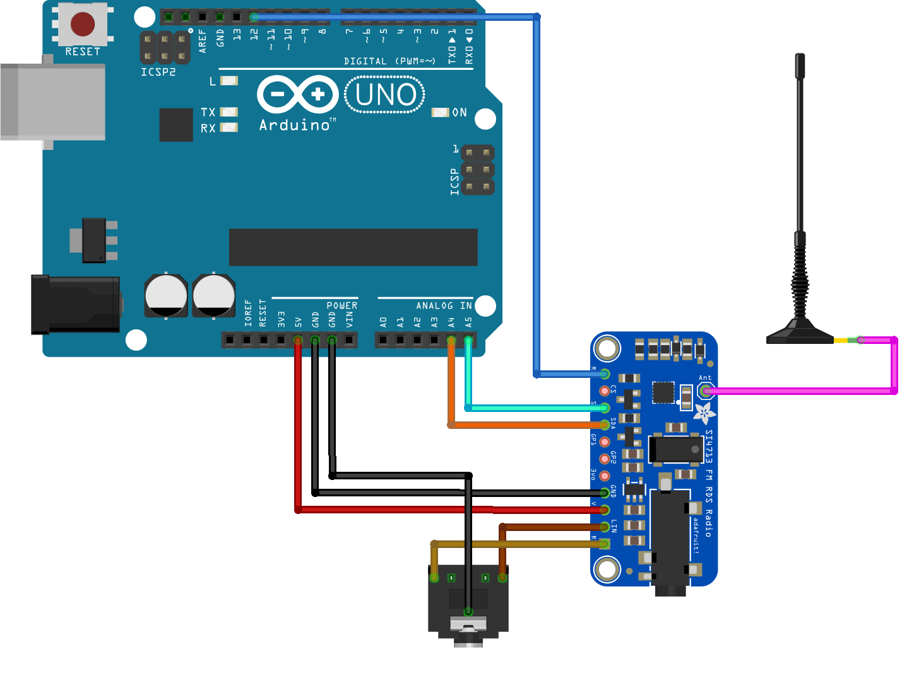
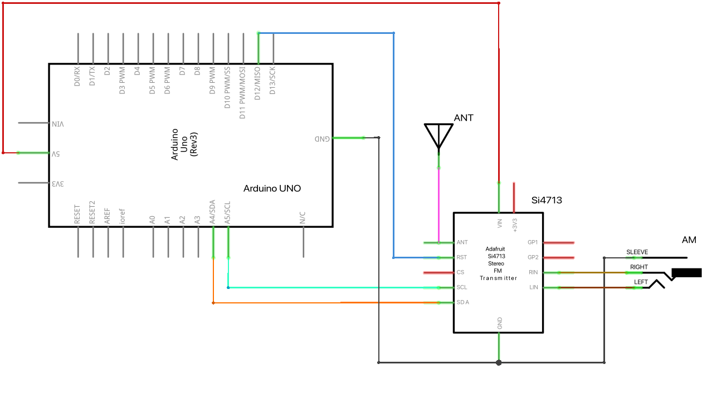
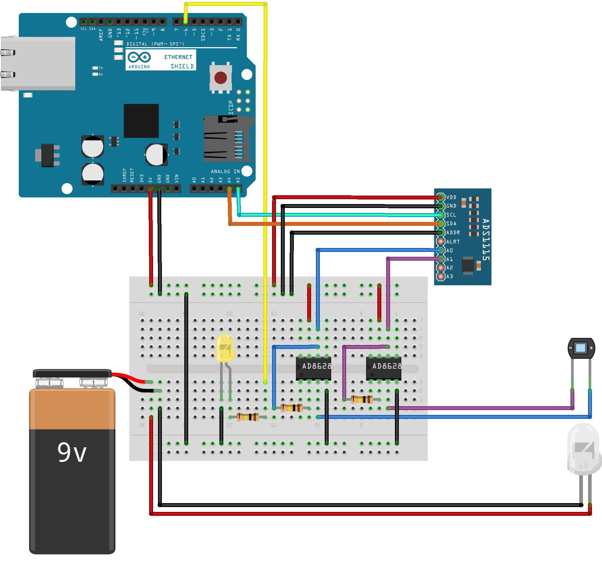
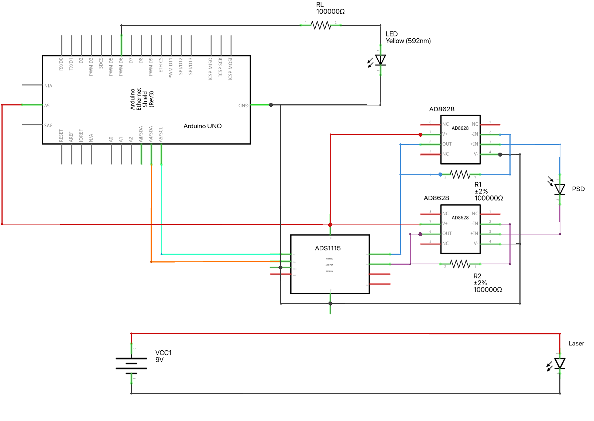

Purpose
Study a weak-signal measurement chain that converts current changes to mechanical deflection, then reads optical-lever displacement with a position-sensitive detector.
Transforming hard-to-measure weak electrical signals through a multi-stage conversion chain — EM Induction → Mechanical Deflection → Optical Amplification → Digital Processing — achieving complete detection and quantitative analysis from physical quantity to digital output.
This experimental design addresses weak electrical signals that are difficult to measure directly. It defines a full chain from induction in a receiving coil through electromagnetic mechanical deflection, optical-lever amplification, PSD readout, and analog-to-digital conversion. A separate calibration module relates input current to sensor output. Schematics, wiring diagrams, control code, and error analysis accompany the proposed validation in the paper.
Study a weak-signal measurement chain that converts current changes to mechanical deflection, then reads optical-lever displacement with a position-sensitive detector.
Read abstract, system design, modules, calibration, and error analysis in order. Project files at the end link the paper and materials; reproduction requires the circuit, software, and calibration model together.
A receiving coil, electromagnetic deflection mechanism, optical lever, PSD, ADC, and data processing form the chain. Calibration maps spot displacement back to the measured quantity.
The page discusses the proposed chain, uncertainty, and application cases. Interpret figures within the project documents; full hardware measurement validation is not established here.
To address the problems of low amplitude, noise susceptibility, and difficulty in direct measurement of weak electrical signals, this paper designs a weak electrical signal measurement system based on optical lever conversion and amplification. The system receives weak electromagnetic signals through a receiving coil and converts induced current variations into mechanical deflection responses through electromagnetic interaction. Combined with an optical lever structure and a PSD sensor, the system realizes optical amplification and detection of small angular displacements. Signal conditioning, analog-to-digital conversion, embedded data processing, and a calibration module are employed to establish the relationship between input current and PSD output. The system structure, operating principle, and error sources are analyzed, and an experimental verification scheme is proposed.
Using physical amplification to overcome front-end noise in weak-signal measurement
Electrical signals at microampere level and below are easily obscured by environmental noise; increasing electronic gain alone amplifies front-end noise as well. This system performs electromagnetic, mechanical, and optical conversion before precision digital acquisition. It does not directly amplify the electrical signal: it converts current-driven deflection into an easier-to-measure spot displacement.
The paper then presents the overall structure, module implementations, calibration and linearity verification, error analysis, applications, limitations, and future work in order.
Modular architecture and multi-stage conversion chain
The system uses a rectangular frame as mechanical support with a modular design dividing the apparatus into four functional modules. The left side houses the suspended deflection structure; the right side accommodates laser emission, spot detection, and data processing circuits. The receiving and deflection modules employ an integrated coil structure wound from a single continuous copper wire, reducing connection losses. The entire apparatus incorporates electromagnetic shielding, with the data processing section isolated in a metal enclosure.


Stable & controllable test signal source — Computer audio + Si4713 RF
The generation module consists of a computer audio output, an Arduino control unit, and a Si4713 RF transmitter chip. The computer generates low-frequency modulation signals with controllable amplitude and frequency, fed into the Si4713's LIN and RIN inputs via a 3.5mm audio jack. The Arduino initializes and configures the Si4713 through I2C. The Si4713 integrates frequency synthesis, modulation control, and RF output — modulating the audio signal onto a specified RF carrier and transmitting via antenna.


The low-frequency modulation signal is generated by a Python script (100Hz sine wave via sounddevice). The Arduino handles Si4713 communication control. Compared to traditional digital waveform generation, this approach leverages computer audio output for high-stability modulation, improving frequency and amplitude control precision.
Field signal → Current signal — The first conversion
The receiving module adopts a lightweight, movable structural design, consisting of a multi-turn receiving coil with NdFeB magnets arranged on both sides with opposing poles. This creates a directionally stable magnetic field in the coil region. When an external weak alternating current signal propagates through space creating a changing magnetic field, the flux through the coil varies with time. According to Faraday's law, an induced EMF and current are generated, transmitted through a closed loop to the deflection coil.
The receiving and deflection coils use an integrated coil structure (one continuous copper wire), directly connected. This eliminates contact resistance and connection stability issues inherent in traditional separated connections, significantly improving system sensitivity.
Core of physical signal amplification — Ampere force + optical lever
The deflection module consists of a suspended deflection coil, permanent magnets, a reflector, and mechanical support. The coil is suspended by two fine copper wires; the reflector is fixed to the coil and rotates synchronously. A collimated laser beam from the right strikes the reflector and is reflected back onto a one-dimensional PSD.
When induced current I flows through the coil, the current-carrying coil experiences an Ampere force in the constant magnetic field B, generating a rotational torque. The suspension wire simultaneously produces a restoring torque. At equilibrium, the reflector deflects by θ, the reflected laser deflects by 2θ, traveling distance D to the PSD. Under small-angle conditions (θ ≤ 5°), spot position x and current I satisfy an approximately linear relationship:
Where k is the wire's equivalent torsional stiffness and N the coil turns. The deflection module converts weak current into observable optical position signals.
Optical signal detection · Data conversion · Measurement output
Normalized Position Operator P — The PSD outputs Ia, Ib from its two terminals. To eliminate laser power fluctuations and ambient light effects:
Within the operating range, P and induced current I satisfy a linear relationship (C from calibration):
Signal Frequency f — Continuous PSD acquisition with zero-crossing detection:
EMF Amplitude U — Receiving and deflection coils in series, impedance measured via LCR bridge:
The data processing module comprises a PSD sensor, AD8628 low-noise conditioning circuit, ADS1115 16-bit ADC, and Arduino. The PSD uses the lateral photoelectric effect to produce differential photocurrents. The AD8628 forms a transimpedance amplifier for I-V conversion (low input bias current, low offset voltage). The ADS1115 communicates via I2C with the Arduino for high-precision digital sampling.


The program uses modular design: ambient light compensation reduces background interference, a moving average filter (window N=16) suppresses random noise, and zero-crossing detection computes signal frequency. Filtered data is used for comprehensive computation of spot position, current, voltage, and frequency — output via serial.
PSD dual-channel acquisition, ambient compensation, moving average filter, zero-crossing frequency detection & parameter output
Establishing quantitative conversion between input current and PSD output
A precision sense resistor Rs = 220Ω is connected in series with the deflection coil loop. The actual coil current is obtained via I = VR / Rs. The Arduino outputs PWM drive signals at different duty cycles across 6 levels, collecting 17 (Ii, Pi) pairs per level. After accumulating 100 data pairs, least-squares fitting yields conversion coefficient C, zero-offset b, and R² correlation coefficient.
The calibration module consists of a current output section (PWM drive + sense resistor) and a coefficient computation section (reusing data processing hardware). Calibration requires no hardware changes — merely switching the Arduino program toggles between calibration and measurement modes, ensuring identical signal paths and avoiding errors from additional measurement equipment.


Error sources · Uncertainty evaluation · Accuracy improvement strategies
Magnetic field non-uniformity — non-ideal spatial distribution affects Ampere force vs. deflection angle
Mechanical structure errors — wire properties and reflector angle variations are optically amplified
Analog circuit errors — op-amp offset voltage, bias current, temperature drift; feedback component variations
ADC quantization error — reference voltage fluctuations and sampling noise limit resolution
Environmental interference — external EMI coupling, temperature-induced long-term drift
Type A — statistical analysis of repeated measurements; captures air turbulence, mechanical vibration, circuit random noise
Type B — based on instrument precision and calibration parameter errors (ADC accuracy, amplifier parameters, conversion coefficient uncertainty)
Combined standard uncertainty — synthesis of independent components per error propagation law
Expanded uncertainty — coverage factor × combined uncertainty for a given confidence level
Hardware: wind shielding, optimized support, shortened analog signal paths, enhanced shielding. Software: moving average filtering, outlier removal, appropriate sampling parameters. Procedures: optical alignment and zero-point calibration before experiments, periodic baseline verification during long measurements.
Verifying system detection capability through typical experimental scenarios
The photocell output connects to the system input, allowing weak photocurrent to flow through the receiving and deflection structure. Maintaining constant incident light frequency while varying intensity, spot position changes are recorded to verify photocurrent detection capability. Compared to traditional galvanometer methods, the optical lever structure enhances observability of微小 displacements.
Using an adjustable light source to progressively reduce input signal intensity, PSD output changes are recorded to determine the effective detection limit. Long-duration zero-input data acquisition analyzes zero-point drift and background noise levels, providing a basis for structural parameter optimization.
Materials under test are placed beneath a stable light source to generate photocurrent fed into the system. By detecting spot position changes, quantitative comparison of output currents from different materials enables analysis of response intensity, stability, and variation patterns.
System boundary awareness and future optimization directions
The system combines receiving and deflection coils, an optical lever, and a PSD into a complete electrical-mechanical-optical-digital measurement chain. Calibration maps input current to PSD output, while modular hardware and digital filtering make the work a reproducible platform for weak-signal and physics experiments.
Sensitivity vs. speed trade-off — lower stiffness improves sensitivity but compromises dynamic response
Limited linear range — excessive input causes spot to exceed PSD effective area
Frequency response constraints — mechanical inertia limits to low-frequency or quasi-static signals
Environmental sensitivity — relies on controlled lab conditions; air currents, vibration, temperature all cause perturbations
Optical realignment needed — device relocation requires optical path recalibration
Structural optimization — improved suspension wire materials, reduced moving-part mass, refined damping
Magnetic field optimization — better field uniformity for improved current-response linearity
Processing upgrade — higher-performance embedded platforms, advanced digital filtering and auto-calibration
Front-end optimization — lower-noise components, more stable references, temperature compensation
Application expansion — multi-channel reception, low-light detection, weak EM environment analysis
All design documents, circuit projects, program code, and experimental resources
32-page full paper
Si4713 RF transmitter Fritzing project
PSD + AD8628 + ADS1115 Fritzing project
PWM drive + sense resistor Fritzing project
Si4713 init, configuration & RF transmission control
PSD acquisition, compensation, filtering & parameter computation
7-level PWM brightness control & current measurement
Stepped calibration sampling & least-squares fitting auto output
Python sounddevice 100Hz sine wave generator
Complete inventory with specifications & parameters
Presentation and demonstration material
Source image for Figure 1
Source image for Figure 2
Editable XMind source file
Editable XMind source file
Source image
Source image
Source image
Source image
Source image
Source image